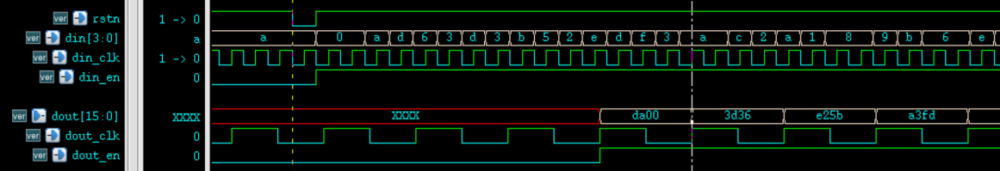

FIFO（First In First Out）は非同期データ転送でよく使用されるメモリです。このメモリの特徴は、データが先入れ先出し（後入れ後出し）であることです。実際、複数ビット幅のデータの非同期転送問題は、速いクロックから遅いクロックドメインへ、あるいは遅いクロックから速いクロックドメインへのいずれの場合でも、FIFOを使用して処理できます。
FIFOの原理
動作フロー
リセット後、書き込みクロックと状態信号の制御により、データがFIFOに書き込まれます。RAMの書き込みアドレスは0から始まり、データを書き込むたびに書き込みアドレスポインタが1増加し、次の記憶セルを指します。FIFOが満杯になると、データをそれ以上書き込むことはできません。そうしないと、データが上書きされて失われます。
FIFOデータが空でない、または満杯状態のとき、読み出しクロックと状態信号の制御により、FIFOからデータを読み出すことができます。RAMの読み出しアドレスは0から始まり、データを読み出すたびに読み出しアドレスポインタが1増加し、次の記憶セルを指します。FIFOが空になると、データを読み出すことはできません。そうしないと、読み出されたデータは誤ったものになります。
FIFOの記憶構造はデュアルポートRAMであるため、読み書きの同時実行が可能です。典型的な非同期FIFOの構造図を以下に示します。ポートおよび内部信号については、コード作成時に説明します。

読み書きのタイミング
書き込みタイミングについては、FIFO内のデータが満杯状態でない限り、書き込み操作を行うことができます。FIFOが満杯状態の場合、それ以上のデータ書き込みは禁止されます。
読み出しタイミングについては、FIFO内のデータが空状態でない限り、読み出し操作を行うことができます。FIFOが空状態の場合、それ以上のデータ読み出しは禁止されます。
いずれにしても、正常にFIFOを読み書きする期間中、読み書きを同時に行う場合は、FIFOへの書き込みレートが読み出しレートを超えてはなりません。
読み出し空状態
リセット開始時、FIFOにはデータがなく、空状態信号は有効です。FIFOにデータが書き込まれると、空状態信号はLowに引き下げられ無効になります。読み出しデータアドレスが書き込みアドレスに追いつき、読み書きアドレスが両方とも等しくなると、FIFOは空状態になります。
非同期FIFOであるため、読み出しアドレスと書き込みアドレスを比較する際には、同期化のためのフリップフロップ段ロジックが必要で、一定の時間を消費します。したがって、空状態の指示信号はリアルタイムではなく、一定の遅延があります。この遅延時間内に新しいデータがFIFOに書き込まれると、空状態指示信号が有効であるにもかかわらず、実際にはFIFO内にデータが存在する現象が発生します。
厳密に言えば、この空状態指示は誤りです。しかし、空状態を生成する意味は、読み出し操作が空状態のFIFOに対してデータを読み出すのを防ぐことにあります。空状態信号が生成されたとき、実際にはFIFO内にデータがありますが、これは空状態信号を前もって判断したことに相当し、このときFIFOからのデータ読み出し操作を行わなくても安全です。したがって、この設計は応用上問題ありません。
書き込み満杯状態
リセット開始時、FIFOにはデータがなく、満杯信号は無効です。FIFOにデータが書き込まれた後、読み出し操作が行われないか読み出しレートが比較的遅い場合、書き込みデータアドレスが読み出しデータアドレスよりFIFO深さ1つ分大きくなると、満杯状態信号が生成されます。このとき書き込みアドレスと読み出しアドレスは等しくなりますが、その意味は異なります。

このとき、通常は余分な1ビットをそれぞれ読み出し・書き込みアドレスの拡張ビットとして使用し、読み出しアドレスと書き込みアドレスが同じ場合に、FIFOの状態が空であるか満杯であるかを区別します。読み出しアドレスと書き込みアドレス、および拡張ビットがすべて同じ場合、読み書きされたデータの数が一致していることを示し、このときFIFOは空状態です。読み出しアドレスと書き込みアドレスが同じで、拡張ビットが逆の値の場合、書き込まれたデータの数が読み出されたデータの数をFIFO深さ1つ分超えていることを示し、このときFIFOは満杯状態です。もちろん、この条件が成立する前提は、空状態では読み出し操作が禁止され、満杯状態では書き込み操作が禁止されることです。
同様に、非同期遅延ロジックの存在により、満杯状態信号もリアルタイムではありません。しかし、これも満杯状態信号を前もって判断したことに相当し、このときFIFOへの書き込み操作を行わなくても、アプリケーションの正確性には影響しません。
FIFO設計
設計要件
さまざまなシナリオに適用されるFIFOを設計するために、ここでは設計に対する要件を次のように示します。
- (1) FIFOの深さと幅をパラメータ化し、空状態信号と満杯状態信号を出力し、さらに設定可能な満杯状態信号を出力します。FIFO内部のデータが設定したパラメータ数に達したとき、その信号をHighにします。
- (2) 入力データと出力データのビット幅は一致しなくてもかまいませんが、書き込みデータ・書き込みアドレスのビット幅と、読み出しデータ・読み出しアドレスのビット幅の一貫性を保証する必要があります。例えば、書き込みデータのビット幅が8ビットの場合、書き込みアドレスのビット幅は6ビット（64個のデータ）です。出力データのビット幅が32ビットの場合、出力アドレスのビット幅は4ビット（16個のデータ）にすべきです。
- (3) FIFOは非同期です。つまり、読み書き制御信号は異なるクロックドメインから来ます。空・満杯状態信号を出力する前に、読み出し・書き込みアドレス信号をグレイコードで同期処理する必要があります。複数ビット幅の信号のトグル（遷移）を減らすことで、フリップフロップ段（打拍）同期におけるデータ転送エラーを減らします。グレイコードと2進数の間の変換を次の図に示します。

デュアルポートRAM設計
RAMのポートパラメータは設定可能で、読み出しと書き込みのビット幅は一致しなくてもかまいません。memory配列を定義する際には、アドレスビット幅が長く、データビット幅が短いパラメータを基準にすることをお勧めします。これにより、配列変数へのアクセスが容易になります。
Verilogでの記述は以下のとおりです。
実装例
#( parameter AWI = 5 ,
parameter AWO = 7 ,
parameter DWI = 64 ,
parameter DWO = 16
)
(
input CLK_WR , //書き込みクロック
input WR_EN , //書き込みイネーブル
input [AWI-1:0] ADDR_WR ,//書き込みアドレス
input [DWI-1:0] D , //書き込みデータ
input CLK_RD , //読み出しクロック
input RD_EN , //読み出しイネーブル
input [AWO-1:0] ADDR_RD ,//読み出しアドレス
output reg [DWO-1:0] Q //読み出しデータ
);
//出力ビット幅が入力ビット幅より大きい場合、拡大倍率と対応するビット数を求める
parameter EXTENT = DWO/DWI ;
parameter EXTENT_BIT = AWI-AWO > 0 ? AWI-AWO : 'b1 ;
//入力ビット幅が出力ビット幅より大きい場合、縮小倍率と対応するビット数を求める
parameter SHRINK = DWI/DWO ;
parameter SHRINK_BIT = AWO-AWI > 0 ? AWO-AWI : 'b1;
genvar i ;
generate
//データビット幅を拡張する（アドレスビット幅を縮小する）
if (DWO >= DWI) begin
//書き込みロジック、毎クロック1回書き込む
reg [DWI-1:0] mem [(1<<AWI)-1 : 0] ;
always @(posedge CLK_WR) begin
if (WR_EN) begin
mem[ADDR_WR] <= D ;
end
end
//読み出しロジック、毎クロック4回読み出す
for (i=0; i<EXTENT; i=i+1) begin
always @(posedge CLK_RD) begin
if (RD_EN) begin
Q[(i+1)*DWI-1: i*DWI] <= mem[(ADDR_RD*EXTENT) + i ] ;
end
end
end
end
//=================================================
//データビット幅を縮小する（アドレスビット幅を拡張する）
else begin
//書き込みロジック、毎クロック4回書き込む
reg [DWO-1:0] mem [(1<<AWO)-1 : 0] ;
for (i=0; i<SHRINK; i=i+1) begin
always @(posedge CLK_WR) begin
if (WR_EN) begin
mem[(ADDR_WR*SHRINK)+i] <= D[(i+1)*DWO -1: i*DWO] ;
end
end
end
//読み出しロジック、毎クロック1回読み出す
always @(posedge CLK_RD) begin
if (RD_EN) begin
Q <= mem[ADDR_RD] ;
end
end
end
endgenerate
endmodule
カウンタ設計
カウンタは読み出し・書き込みアドレス情報を生成するために使用され、ビット幅は設定可能です。終了値を設定する必要はなく、オーバーフロー後に自動的に再カウントさせればよいです。Verilogでの記述は以下のとおりです。
実装例
#(parameter W )
(
input rstn ,
input clk ,
input en ,
output [W-1:0] count
);
reg [W-1:0] count_r ;
always @(posedge clk or negedge rstn) begin
if (!rstn) begin
count_r <= 'b0 ;
end
else if (en) begin
count_r <= count_r + 1'b1 ;
end
end
assign count = count_r ;
endmodule
FIFO設計
このモジュールはFIFOの本体部分であり、読み出し・書き込み制御ロジックを生成し、空状態、満杯状態、プログラマブル満杯状態信号を生成します。
紙面の都合上、ここでは読み出しデータのビット幅が書き込みデータのビット幅より大きい場合のロジックコードのみを示します。書き込みデータのビット幅が読み出しデータのビット幅より大きい場合のコード記述は付録を参照してください。
実装例
#( parameter AWI = 5 ,
parameter AWO = 3 ,
parameter DWI = 4 ,
parameter DWO = 16 ,
parameter PROG_DEPTH = 16) //深さを設定可能
(
input rstn, //読み書きで1つのリセットを使用
input wclk, //書き込みクロック
input winc, //書き込みイネーブル
input [DWI-1: 0] wdata, //書き込みデータ
input rclk, //読み出しクロック
input rinc, //読み出しイネーブル
output [DWO-1 : 0] rdata, //読み出しデータ
output wfull, //書き込み満杯フラグ
output rempty, //読み出し空フラグ
output prog_full //プログラマブル満杯フラグ
);
//出力ビット幅が入力ビット幅より大きい場合、拡大倍率と対応するビット数を求める
parameter EXTENT = DWO/DWI ;
parameter EXTENT_BIT = AWI-AWO ;
//出力ビット幅が入力ビット幅より小さい場合、縮小倍率と対応するビット数を求める
parameter SHRINK = DWI/DWO ;
parameter SHRINK_BIT = AWO-AWI ;
//==================== push/wr counter ===============
wire [AWI-1:0] waddr ;
wire wover_flag ; //書き込みアドレス拡張用に1ビット多く使用
ccnt #(.W(AWI+1))
u_push_cnt(
.rstn (rstn),
.clk (wclk),
.en (winc && !wfull), //full時は書き込み禁止
.count ({wover_flag, waddr})
);
//============== pop/rd counter ===================
wire [AWO-1:0] raddr ;
wire rover_flag ; //読み出しアドレス拡張用に1ビット多く使用
ccnt #(.W(AWO+1))
u_pop_cnt(
.rstn (rstn),
.clk (rclk),
.en (rinc & !rempty), //empty時は読み出し禁止
.count ({rover_flag, raddr})
);
//==============================================
//狭いデータが入り、広いデータが出る
generate
if (DWO >= DWI) begin : EXTENT_WIDTH
//グレイコード変換
wire [AWI:0] wptr = ({wover_flag, waddr}>>1) ^ ({wover_flag, waddr}) ;
//書き込みポインタを読み出しクロックドメインに同期する
reg [AWI:0] rq2_wptr_r0 ;
reg [AWI:0] rq2_wptr_r1 ;
always @(posedge rclk or negedge rstn) begin
if (!rstn) begin
rq2_wptr_r0 <= 'b0 ;
rq2_wptr_r1 <= 'b0 ;
end
else begin
rq2_wptr_r0 <= wptr ;
rq2_wptr_r1 <= rq2_wptr_r0 ;
end
end
//グレイコード変換
wire [AWI-1:0] raddr_ex = raddr << EXTENT_BIT ;
wire [AWI:0] rptr = ({rover_flag, raddr_ex}>>1) ^ ({rover_flag, raddr_ex}) ;
//読み出しポインタを書き込みクロックドメインに同期する
reg [AWI:0] wq2_rptr_r0 ;
reg [AWI:0] wq2_rptr_r1 ;
always @(posedge wclk or negedge rstn) begin
if (!rstn) begin
wq2_rptr_r0 <= 'b0 ;
wq2_rptr_r1 <= 'b0 ;
end
else begin
wq2_rptr_r0 <= rptr ;
wq2_rptr_r1 <= wq2_rptr_r0 ;
end
end
//グレイコード逆変換
//空・満杯状態信号のみが必要な場合は、逆変換は不要
//プログラマブル満杯状態信号が存在するため、アドレスを逆変換すると比較が容易になる
reg [AWI:0] wq2_rptr_decode ;
reg [AWI:0] rq2_wptr_decode ;
integer i ;
always @(*) begin
wq2_rptr_decode[AWI] = wq2_rptr_r1[AWI];
for (i=AWI-1; i>=0; i=i-1) begin
wq2_rptr_decode[i] = wq2_rptr_decode[i+1] ^ wq2_rptr_r1[i] ;
end
end
always @(*) begin
rq2_wptr_decode[AWI] = rq2_wptr_r1[AWI];
for (i=AWI-1; i>=0; i=i-1) begin
rq2_wptr_decode[i] = rq2_wptr_decode[i+1] ^ rq2_wptr_r1[i] ;
end
end
//読み出し・書き込みアドレスと拡張ビットが完全に同じときは、空状態
assign rempty = (rover_flag == rq2_wptr_decode[AWI]) &&
(raddr_ex >= rq2_wptr_decode[AWI-1:0]);
//読み出し・書き込みアドレスが同じで拡張ビットが異なるときは、満杯状態
assign wfull = (wover_flag != wq2_rptr_decode[AWI]) &&
(waddr >= wq2_rptr_decode[AWI-1:0]) ;
//拡張ビットが同じとき、書き込みアドレスは必ず読み出しアドレス以上になる
//拡張ビットが異なるとき、書き込みアドレス部分は読み出しアドレスより小さくなる。実際の書き込みアドレスにはFIFO深さ1つ分を加える必要がある
assign prog_full = (wover_flag == wq2_rptr_decode[AWI]) ?
waddr - wq2_rptr_decode[AWI-1:0] >= PROG_DEPTH-1 :
waddr + (1<<AWI) - wq2_rptr_decode[AWI-1:0] >= PROG_DEPTH-1;
//デュアルポートRAMのインスタンス化
ramdp
#( .AWI (AWI),
.AWO (AWO),
.DWI (DWI),
.DWO (DWO))
u_ramdp
(
.CLK_WR (wclk),
.WR_EN (winc & ！wfull), //書き込み満杯時は書き込み禁止
.ADDR_WR (waddr),
.D (wdata[DWI-1:0]),
.CLK_RD (rclk),
.RD_EN (rinc & !rempty), //読み出し空時は読み出し禁止
.ADDR_RD (raddr),
.Q (rdata[DWO-1:0])
);
end
//==============================================
//big in and small out
/*
else begin: SHRINK_WIDTH
……
end
*/
endgenerate
endmodule
FIFOの呼び出し
以下では、設計したFIFOを呼び出して、複数ビット幅データ転送の非同期処理を行うことができます。
書き込みデータのビット幅は4ビット、書き込み深さは32です。
読み出しデータのビット幅は16ビット、読み出し深さは8、設定可能なfull深さは16です。
実装例
input rstn,
input [4-1: 0] din, //非同期書き込みデータ
input din_clk, //非同期書き込みクロック
input din_en, //非同期書き込みイネーブル
output [16-1 : 0] dout, //同期後データ
input dout_clk, //同期用クロック
input dout_en ); //同期データイネーブル
wire fifo_empty, fifo_full, prog_full ;
wire rd_en_wir ;
wire [15:0] dout_wir ;
//読み空状態のときは読み出しを禁止し、それ以外は読み出し続ける
assign rd_en_wir = fifo_empty ? 1'b0 : 1'b1 ;
fifo #(.AWI(5), .AWO(3), .DWI(4), .DWO(16), .PROG_DEPTH(16))
u_buf_s2b(
.rstn (rstn),
.wclk (din_clk),
.winc (din_en),
.wdata (din),
.rclk (dout_clk),
.rinc (rd_en_wir),
.rdata (dout_wir),
.wfull (fifo_full),
.rempty (fifo_empty),
.prog_full (prog_full));
//同期後のデータとイネーブルをバッファリング
reg dout_en_r ;
always @(posedge dout_clk or negedge rstn) begin
if (!rstn) begin
dout_en_r <= 1'b0 ;
end
else begin
dout_en_r <= rd_en_wir ;
end
end
assign dout = dout_wir ;
assign dout_en = dout_en_r ;
endmodule
testbench
実装例
`define SMALL2BIG
module test ;
`ifdef SMALL2BIG
reg rstn ;
reg clk_slow, clk_fast ;
reg [3:0] din ;
reg din_en ;
wire [15:0] dout ;
wire dout_en ;
//reset
initial begin
clk_slow = 0 ;
clk_fast = 0 ;
rstn = 0 ;
#50 rstn = 1 ;
end
//読み出しクロック clock_slow は書き込みクロック clk_fast の 1/4 より速い
//読み出しデータが書き込みデータよりわずかに速いことを保証
parameter CYCLE_WR = 40 ;
always #(CYCLE_WR/2/4) clk_fast = ~clk_fast ;
always #(CYCLE_WR/2-1) clk_slow = ~clk_slow ;
//data generate
initial begin
din = 16'h4321 ;
din_en = 0 ;
wait (rstn) ;
//(1) full、prog_full、empyt 信号をテスト
force test.u_data_buf2.u_buf_s2b.rinc = 1'b0 ;
repeat(32) begin
@(negedge clk_fast) ;
din_en = 1'b1 ;
din = {$random()} % 16;
end
@(negedge clk_fast) din_en = 1'b0 ;
//(2) データの読み書きをテスト
#500 ;
rstn = 0 ;
#10 rstn = 1 ;
release test.u_data_buf2.u_buf_s2b.rinc;
repeat(100) begin
@(negedge clk_fast) ;
din_en = 1'b1 ;
din = {$random()} % 16;
end
//(3) 読み出しを停止して、empyt、full、prog_full 信号を再度テスト
force test.u_data_buf2.u_buf_s2b.rinc = 1'b0 ;
repeat(18) begin
@(negedge clk_fast) ;
din_en = 1'b1 ;
din = {$random()} % 16;
end
end
fifo_s2b u_data_buf2(
.rstn (rstn),
.din (din),
.din_clk (clk_fast),
.din_en (din_en),
.dout (dout),
.dout_clk (clk_slow),
.dout_en (dout_en));
`else
`endif
//stop sim
initial begin
forever begin
#100;
if ($time >= 5000) $finish ;
end
end
endmodule
シミュレーション解析
testbench 内の3ステップのテスト激励に基づき、分析は以下のとおりです。
テスト(1): FIFO ポートおよびいくつかの内部信号のタイミング結果は以下のとおりです。
図からわかるように、FIFO 内部でデータ書き込みを開始しても、空状態信号が Low になるまでに時間遅延があります。これは読み書きアドレス情報を同期させているためです。
このとき FIFO 読み出し操作を行っていないため、書き込み操作に対して full と prog_full が High になる遅延はほとんどありません。

テスト(2): FIFO が同時に読み書きを行うとき、デジタル最上位非同期処理モジュールのポート信号は以下のとおりです。2つの図は、データ転送開始時と終了時の読み出しプロセスをそれぞれ示しています。
図からわかるように、データは開始時と末尾の両方で正しく転送されており、異なるクロックドメイン間での複数ビット幅データの非同期処理が完了しています。


テスト(3): FIFO 全体の読み書き動作と読み出し停止時のタイミングシミュレーション図を以下に示します。
図からわかるように、読み書きが同時に行われているとき、読み出し空状態信号 rempty は Low になり、FIFO にデータが書き込まれていることを示します。一方、読み出しデータレートは書き込みレートよりわずかに高く、データ間の転送には遅延があるため、途中で rempty が High になる動作があります。
読み書き中、full と prog_full 信号は常に Low であり、FIFO 内のデータが一定量に達していないことを示しています。読み出し操作を停止すると、2つの full 信号はまもなく High になり、FIFO が満杯であることを示します。読み書きアドレス情報を詳しく比較すると、FIFO の動作に問題はありません。

完全な FIFO 設計は添付ファイルを参照してください。入力データビット幅が出力データビット幅より小さい場合の非同期設計とシミュレーションを含みます。